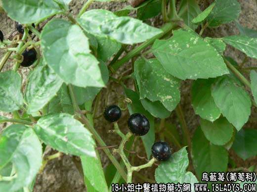

【中药概述】乌蔹莓为葡萄科草本植物乌蔹莓的全草。苦，酸，寒。归心、肝、小肠经。 1．清热解毒：用于咽喉肿痛，乳痈，热疖疮痈，目翳，丹毒，痄腮，痢疾，皮肤创伤，蛇虫咬伤等。 2．凉血止血：用于尿血，咯血，咳血等。 3．清热消肿：用于黄疸，小便不利，尿道涩痛，白浊等。 4．活血消肿：用于跌打损伤，骨折等，鲜品捣敷。 【化学成分】含阿聚糖。粘液质、硝酸钾、甾醇、氨基酸、酸性成分、黄酮类。 【用量用法】本品8——12g，水煎服，或入剂。
本文解释权归中药大全，本文地址： https://www.daquan.com/post/1859.html